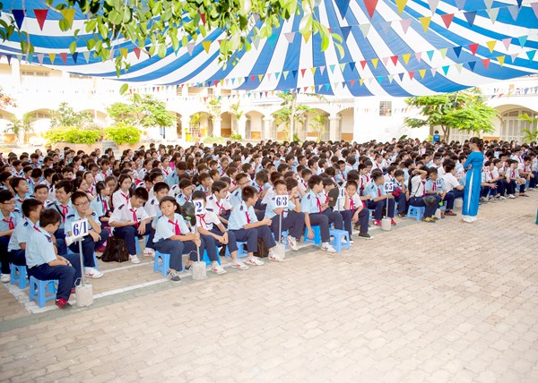

TRƯỜNG TRUNG HỌC CƠ SỞ BÌNH QUỚI TÂY
Địa chỉ: 376A Bình Quới, Phường 28, Bình Thạnh, Thành phố Hồ Chí Minh
Địa chỉ: 376A Bình Quới, Phường 28, Bình Thạnh, Thành phố Hồ Chí Minh
Được thành lập vào năm 2005 theo quyết định của UBND Q.Bình Thạnh. Trường THCS Bình Quới Tây - Q.Bình Thạnh tọa lạc tại khu dân cư Bình Quới - Thanh Đa, địa chỉ: 376A Bình Quới, P.28 Q.Bình Thạnh, Tp.Hồ Chí Minh. Trường THCS Bình Quới Tây được giao nhiệm vụ đào tạo và giảng dạy cho học sinh khối trung học cơ sở. Nhiều năm qua, trường đã nơi đào tạo ra nhiều học sinh giỏi cấp quận và cấp thành phố. Với phương châm "Vào lớp thuộc bài, Ra lớp hiểu bài", ban giám hiệu nhà trường cùng với tập thể sư phạm đã luôn tận tâm giúp đỡ cho các em học sinh trước, trong và sau khi học. Điều đó đã giúp cho tập thể hội đồng sư phạm nhiều năm liền nhận được bằng khen cấp thành phố và của Thủ tướng chính phủ.

Trường THCS Bình Quới Tây nơi ươm mầm tri thức và chắp cánh ước mơ cho biết bao thế hệ học sinh trên vùng đất thân thương. Với bề dày truyền thống dạy và học, ngôi trường không chỉ là nơi truyền đạt kiến thức, mà còn là mái nhà chung nuôi dưỡng nhân cách, tình yêu thương và khát vọng vươn lên. Từng dãy phòng học, từng hàng cây sân trường đều ghi dấu bao kỷ niệm tuổi học trò hồn nhiên, trong sáng. Dưới sự dẫn dắt tận tâm của đội ngũ thầy cô giáo đầy nhiệt huyết và yêu nghề, học sinh Bình Quới Tây luôn được khơi dậy niềm say mê học tập, được tạo điều kiện phát triển toàn diện cả về trí tuệ lẫn tâm hồn. Trường THCS Bình Quới Tây không chỉ là điểm đến của tri thức, mà còn là nơi bắt đầu cho hành trình trưởng thành và thành công của bao người con Bình Quới mai sau.